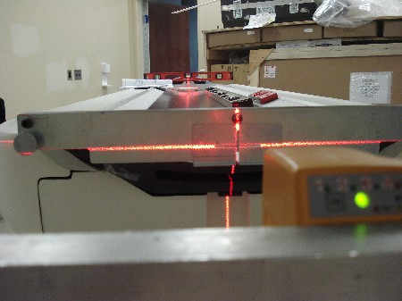

Operating Documentation
Direction 5193574-800, Rev# 22
LightSpeed 7.X Service Methods
Module Version 1.0, Version Date 4/22/10
Operating Documentation |
| Labor: | 2 people; 0.5 man-hour |
| Tools: | Standard Install Tool Kit |
| Socket Set | |
| Laser Alignment Kit | |
| Johnson Professional 4 ft. level | |
| Tape Measure |
| ||||
| Potential for injury. | ||||
| Table will tip if not anchored or attached on the dolly. | ||||
| Make certain that Table is adequately secured to the dolly. |
| NOTE: | During this alignment process, ignore the vertical component of the laser alignment, as this adjustment will be made during Table Height Characterization after power up. |
1. Position the table with the four leveling pads over the floor cutouts. Use the table centering and reference lines to position the table to its approximate location relative to the gantry. | |
2. Level and align the table to the gantry by following these steps: |
|
3. Verify all of the following. Repeat the alignment if any are not true.
|  |
4. Perform cradle/table parallel check (this is an alternate method to verify table alignment). | |
5. Remove shipping bolts from the table leveling pads. | |
6. Verify lock rings are tight at all mounting locations. |